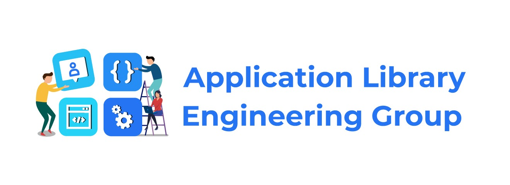

Last Updated: 2021-05-12
Sample text (Learn any programming language). Have a knowledge of fundamentals of programming.
In this codelab, you're going to get familiar with VCS
Follow the below steps to create a new GIT account (if the account is already existing then SKIP this step)
Follow this link to create a GIT account.
#newfeature (we can rename it).Some things to try...
We use GitHub issues to track public bugs. Report a bug by opening a new issue. Great Bug Reports tend to have: :
Describe the bug
A clear and concise description of what the bug is.
To Reproduce
Steps to reproduce the behavior:
Expected behavior
A clear and concise description of what you expected to happen.
Screenshots
If applicable, add screenshots to help explain your problem.
Desktop (please complete the following information):
Smartphone (please complete the following information):
Is your feature request related to a problem? Please describe.
A clear and concise description of what the problem is. Ex. I'm always frustrated when [...]
Describe the solution you'd like
A clear and concise description of what you want to happen.
Describe alternatives you've considered
A clear and concise description of any alternative solutions or features you've considered.
FORMAT | EXAMPLE |
Type: Subject Blank Line Body Blank Line Footer (optional) | Fix: Couple of unit tests for IE9 Older IEs serialize html uppercased, but IE9 does not... Would be better to expect case insensitive, unfortunately jasmine does not allow us to use regex for throwing expectations. ---------------------------------------------------------------------- feature: onUrlChange event (popstate/hashchange/polling) Added new event to browser: - forward popstate event if available - forward hashchange event if popstate not available - do polling when neither popstate nor hashchange available Breaks browser.onHashChange, which was removed (use onUrlChange instead) |
Congratulations, you've successfully finished Applibgroup dev guide!